CODING AGENTS AS PIXEL WORLD MODELS
traex/DeepSeek-V4.1-Flash · 0064
点击播放 · 原生 RGB 像素
逐轮保存的候选
回放视频、检查图与代码变化。
每份候选均可单独播放。实际图片检查记录在下方工具轨迹中。
候选 01播放与检查图
点击播放 · 原生 RGB 像素

展开代码变化
--- 上一保存版本
+++ 本次保存版本
@@ -0,0 +1,179 @@
+from pathlib import Path
+
+import numpy as np
+from PIL import Image
+from scipy.ndimage import gaussian_filter, map_coordinates
+
+import artifact_io
+
+
+CASE_DIR = Path(__file__).resolve().parent
+WIDTH = 256
+HEIGHT = 144
+FRAMES = 20
+FPS = 4
+
+
+def smoothstep(edge0, edge1, value):
+ x = np.clip((value - edge0) / (edge1 - edge0), 0.0, 1.0)
+ return x * x * (3.0 - 2.0 * x)
+
+
+def glass_bounds(y):
+ """Approximate the inner walls of the rounded drinking glass."""
+ curve = np.clip((y - 99.0) / 40.0, -1.0, 1.0) ** 2
+ left = 139.0 + 9.5 * curve
+ right = 180.0 - 8.5 * curve
+ return left, right
+
+
+def original_surface(x):
+ """The gently curved liquid surface visible in the source frame."""
+ return 96.0 + 4.8 * ((x - 160.5) / 20.5) ** 2
+
+
+def add_soft_point(image, x, y, color, radius, strength):
+ """Add a small antialiased light/dark spot without changing its silhouette."""
+ x0 = max(0, int(np.floor(x - radius * 2)))
+ x1 = min(WIDTH, int(np.ceil(x + radius * 2 + 1)))
+ y0 = max(0, int(np.floor(y - radius * 2)))
+ y1 = min(HEIGHT, int(np.ceil(y + radius * 2 + 1)))
+ yy, xx = np.mgrid[y0:y1, x0:x1]
+ falloff = np.exp(-((xx - x) ** 2 + (yy - y) ** 2) / (2.0 * radius * radius))
+ alpha = falloff[..., None] * strength
+ image[y0:y1, x0:x1] = image[y0:y1, x0:x1] * (1.0 - alpha) + np.asarray(color) * alpha
+
+
+def render_frame(base, frame_index):
+ if frame_index == 0:
+ return np.asarray(base, dtype=np.uint8).copy()
+
+ t = frame_index / FPS
+ yy, xx = np.mgrid[0:HEIGHT, 0:WIDTH].astype(np.float32)
+ frame = base.copy()
+
+ left, right = glass_bounds(yy)
+ wall_distance = np.minimum(xx - left, right - xx)
+ interior = smoothstep(-0.8, 1.8, wall_distance)
+ interior *= smoothstep(84.0, 87.0, yy)
+
+ # The glass starts almost full. Its level rises slowly and eases out, while
+ # the incoming stream makes a shallow depression at the impact point.
+ rise = 4.7 * (1.0 - np.exp(-2.15 * t))
+ surface = original_surface(xx) - rise
+ surface += 0.42 * np.sin(0.53 * (xx - 140.0) - 3.1 * t + 0.4)
+ surface += 0.22 * np.sin(0.96 * xx + 4.2 * t)
+ surface -= 0.90 * np.exp(-((xx - 163.2) / 2.8) ** 2)
+ surface = np.minimum(surface, original_surface(xx) - 0.15)
+
+ # Clone the topmost source liquid upward into the newly occupied rows.
+ sample_y = np.clip(yy + 7.2, 0.0, HEIGHT - 1.0)
+ yi = np.floor(sample_y).astype(np.int32)
+ yf = sample_y - yi
+ yi1 = np.minimum(yi + 1, HEIGHT - 1)
+ xi = np.arange(WIDTH, dtype=np.int32)[None, :]
+ liquid = base[yi, xi] * (1.0 - yf[..., None]) + base[yi1, xi] * yf[..., None]
+ depth = np.maximum(yy - surface, 0.0)
+ liquid += np.array([4.0, 0.5, 0.0]) * np.exp(-depth / 8.0)[..., None]
+ liquid += np.array([12.0, 4.0, 1.0]) * np.exp(-depth / 1.5)[..., None]
+
+ # Only replace the strip between the animated surface and the original one.
+ new_rows = smoothstep(-0.8, 0.8, yy - surface)
+ old_rows = 1.0 - smoothstep(-1.0, 1.1, yy - original_surface(xx))
+ fill_alpha = interior * new_rows * old_rows
+ frame = frame * (1.0 - fill_alpha[..., None]) + liquid * fill_alpha[..., None]
+
+ # A narrow meniscus catches the room light and is broken up by the stream.
+ cap = np.exp(-((yy - surface) / 0.72) ** 2) * interior
+ cap_strength = 0.26 + 0.11 * np.sin(0.38 * xx - 3.5 * t)
+ cap_strength *= 1.0 - 0.35 * np.exp(-((xx - 163.2) / 3.8) ** 2)
+ frame = frame * (1.0 - (cap * cap_strength)[..., None])
+ frame += np.array([172.0, 72.0, 39.0]) * (cap * cap_strength)[..., None]
+
+ # Expanding surface rings communicate the continuous impact without
+ # introducing large, synthetic shapes.
+ for ring in range(3):
+ radius = (1.0 + t * 7.8 + ring * 6.6) % 19.0
+ horizontal = np.abs(xx - 163.2)
+ ring_band = np.exp(-((horizontal - radius) / 1.15) ** 2)
+ vertical = np.exp(-((yy - (surface + 1.25)) / 1.05) ** 2)
+ strength = 0.15 * np.exp(-radius / 18.0) * ring_band * vertical * interior
+ frame = frame * (1.0 - strength[..., None])
+ frame += np.array([155.0, 63.0, 35.0]) * strength[..., None]
+
+ # Preserve the photographed stream, but advect its interior texture and
+ # move a restrained highlight down the falling column.
+ crop = (slice(53, 100), slice(156, 171))
+ source = base[crop]
+ cy, cx = np.mgrid[53:100, 156:171].astype(np.float32)
+ red_score = source[..., 0] - 0.55 * source[..., 1] - 0.45 * source[..., 2]
+ stream_mask = smoothstep(33.0, 58.0, red_score)
+ stream_mask *= smoothstep(83.0, 94.0, source[..., 0])
+ stream_mask *= smoothstep(54.0, 57.0, cy)
+ stream_mask *= 1.0 - smoothstep(surface[crop] - 1.4, surface[crop] + 0.8, cy)
+ stream_mask = gaussian_filter(stream_mask, 0.42)
+
+ dx = 0.30 * np.sin(0.29 * (cy - 56.0) + 2.7 * t)
+ dx += 0.12 * np.sin(0.83 * cy - 5.4 * t)
+ warped = np.empty_like(source)
+ for channel in range(3):
+ warped[..., channel] = map_coordinates(
+ source[..., channel],
+ [cy - 53.0, cx + dx - 156.0],
+ order=1,
+ mode="nearest",
+ )
+
+ pulse_y = 58.0 + ((t * 18.0) % 31.0)
+ pulse = np.exp(-((cy - pulse_y) / 3.1) ** 2)
+ pulse *= np.exp(-((cx - 163.1 - 0.25 * np.sin(cy * 0.27)) / 0.72) ** 2)
+ stream_light = 0.92 + 0.11 * np.sin(0.54 * cy - 5.2 * t + 0.7)
+ stream_light += 0.30 * pulse
+ streamed = warped * stream_light[..., None]
+ alpha = stream_mask * 0.58
+ region = frame[crop]
+ frame[crop] = region * (1.0 - alpha[..., None]) + streamed * alpha[..., None]
+
+ # Two tiny droplets above the surface make the contact read as a pour,
+ # rather than a stationary red column.
+ for k, side in enumerate((-1.0, 1.0)):
+ drop_x = 163.1 + side * (1.9 + 0.35 * np.sin(2.4 * t + k))
+ drop_y = surface[0, int(round(drop_x))] - 1.4 - 0.9 * (
+ 0.5 + 0.5 * np.sin(5.1 * t + k * 2.2)
+ )
+ add_soft_point(frame, drop_x, drop_y, (177.0, 75.0, 42.0), 0.58, 0.42)
+
+ # Sparse bubbles rise through the existing liquid. Their paths are slow and
+ # deterministic, matching the real-time, locked-off shot.
+ bubbles = ((148.5, 4.8, 0.0, 0.48), (170.8, 3.8, 13.0, 0.38), (155.5, 5.7, 25.0, 0.32))
+ for bx, speed, offset, opacity in bubbles:
+ by = 135.0 - ((offset + speed * t) % 35.0)
+ bx_wave = bx + 0.65 * np.sin(0.42 * by + 1.3 * t)
+ surface_here = surface[0, int(np.clip(round(bx_wave), 0, WIDTH - 1))]
+ if by > surface_here + 2.5:
+ add_soft_point(frame, bx_wave, by, (205.0, 87.0, 61.0), 0.52, opacity)
+ add_soft_point(frame, bx_wave + 0.7, by + 0.7, (91.0, 14.0, 4.0), 0.72, opacity * 0.35)
+
+ # A few faint flecks moving through the dispenser keep the source of the
+ # pour alive without changing its visible liquid level.
+ for k, (bx, speed, offset) in enumerate(((155.0, 2.8, 1.0), (159.5, 3.6, 8.0), (162.2, 2.2, 15.0))):
+ by = 53.0 - ((offset + speed * t) % 14.0)
+ add_soft_point(frame, bx + 0.4 * np.sin(t * 1.7 + k), by, (186.0, 55.0, 26.0), 0.42, 0.24)
+
+ return np.clip(frame, 0.0, 255.0).round().astype(np.uint8)
+
+
+def main():
+ source = Image.open(CASE_DIR / "first_frame.png").convert("RGB")
+ if source.size != (WIDTH, HEIGHT):
+ source = source.resize((WIDTH, HEIGHT), Image.Resampling.LANCZOS)
+ base = np.asarray(source, dtype=np.float32)
+ frames = np.stack([render_frame(base, index) for index in range(FRAMES)])
+
+ # The contract requires an exact, byte-for-byte visual match at time zero.
+ frames[0] = np.asarray(source, dtype=np.uint8)
+ artifact_io.save(frames, CASE_DIR)
+
+
+if __name__ == "__main__":
+ main()
候选 02播放与检查图
点击播放 · 原生 RGB 像素

展开代码变化
--- 上一保存版本
+++ 本次保存版本
@@ -154,12 +154,6 @@
add_soft_point(frame, bx_wave, by, (205.0, 87.0, 61.0), 0.52, opacity)
add_soft_point(frame, bx_wave + 0.7, by + 0.7, (91.0, 14.0, 4.0), 0.72, opacity * 0.35)
- # A few faint flecks moving through the dispenser keep the source of the
- # pour alive without changing its visible liquid level.
- for k, (bx, speed, offset) in enumerate(((155.0, 2.8, 1.0), (159.5, 3.6, 8.0), (162.2, 2.2, 15.0))):
- by = 53.0 - ((offset + speed * t) % 14.0)
- add_soft_point(frame, bx + 0.4 * np.sin(t * 1.7 + k), by, (186.0, 55.0, 26.0), 0.42, 0.24)
-
return np.clip(frame, 0.0, 255.0).round().astype(np.uint8)
候选 03播放与检查图
可观测工具轨迹
实际执行的命令与返回图片。
命令 1exit 0
/bin/bash -c "pwd && rg --files -g '"'!*.pyc'"' -g '"'!__pycache__'"'"
命令 2exit 0
/bin/bash -c "sed -n '1,240p' GENERATION_RULES.md"
命令 3exit 0
/bin/bash -c "sed -n '1,240p' prompt.txt"
命令 4exit 0
/bin/bash -c "find . -maxdepth 3 -type f -printf '%p\\t%s bytes\\n' | sort"
命令 5exit 0
/bin/bash -c "sed -n '1,260p' artifact_io.py"
命令 6exit 0
/bin/bash -c "sed -n '1,260p' player_template.html"
命令 7exit 127
/bin/bash -c "file first_frame.png && identify -verbose first_frame.png | sed -n '1,100p'"
命令 8exit 127
/bin/bash -c 'mkdir -p .tmp && convert first_frame.png -crop 128x100+128+44 -filter point -resize 512x400 .tmp/crop_pour.png'
命令 9exit 127
/bin/bash -c 'convert first_frame.png -crop 160x110+60+20 -filter point -resize 640x440 .tmp/crop_dispenser.png'
命令 10exit 0
/bin/bash -c "python - <<'PY'
from PIL import Image
im=Image.open('first_frame.png')
print(im.mode, im.size)
PY"命令 11exit 0
/bin/bash -c "python - <<'PY'
from PIL import Image
im=Image.open('first_frame.png')
im.crop((128,44,256,144)).resize((512,400),Image.Resampling.NEAREST).save('.tmp/crop_pour.png')
im.crop((60,20,220,130)).resize((640,440),Image.Resampling.NEAREST).save('.tmp/crop_dispenser.png')
PY"命令 12exit 0
/bin/bash -c "python - <<'PY'
from PIL import Image,ImageDraw,ImageFont
im=Image.open('first_frame.png').resize((1024,576),Image.Resampling.NEAREST)
d=ImageDraw.Draw(im)
for x in range(0,257,10):
X=x*4
d.line((X,0,X,576),fill=(0,255,255),width=1)
if x%20==0:d.text((X+2,2),str(x),fill=(0,255,255))
for y in range(0,145,10):
Y=y*4
d.line((0,Y,1024,Y),fill=(0,255,255),width=1)
if y%20==0:d.text((2,Y+1),str(y),fill=(0,255,255))
im.save('.tmp/grid.png')
PY"命令 13exit 0
/bin/bash -c "python - <<'PY'
from PIL import Image
im=Image.open('first_frame.png')
im.crop((130,20,205,144)).resize((600,992),Image.Resampling.NEAREST).save('.tmp/pour_nearest.png')
im.crop((130,20,205,144)).resize((600,992),Image.Resampling.BICUBIC).save('.tmp/pour_smooth.png')
PY"命令 14exit 0
/bin/bash -c "python - <<'PY'
from PIL import Image
im=Image.open('first_frame.png')
# sample columns around stream at selected y
for y in range(80,136,4):
print('y',y,[(x,im.getpixel((x,y))) for x in range(156,170)])
PY"命令 15exit 0
/bin/bash -c "python - <<'PY' import importlib for m in ['numpy','PIL','cv2','scipy','skimage','imageio','av']: try: x=importlib.import_module(m); print(m, getattr(x,'__version__','ok')) except Exception as e: print(m,'ERR',type(e).__name__,str(e)) PY"
命令 16exit 0
/bin/bash -c "python - <<'PY'
from PIL import Image,ImageDraw
im=Image.open('first_frame.png').crop((125,65,210,144)).resize((850,790),Image.Resampling.NEAREST)
d=ImageDraw.Draw(im)
# grid every pixel? light lines every 5 source px
for sx in range(125,211,5):
X=(sx-125)*10; d.line((X,0,X,790),fill=(0,255,255),width=1); d.text((X+2,2),str(sx),fill=(0,255,255))
for sy in range(65,145,5):
Y=(sy-65)*10; d.line((0,Y,850,Y),fill=(0,255,255),width=1); d.text((2,Y+1),str(sy),fill=(0,255,255))
im.save('.tmp/glass_grid.png')
PY"命令 17exit 0
/bin/bash -c "python - <<'PY'
from PIL import Image
import numpy as np
im=np.array(Image.open('first_frame.png'))
for y in range(82,142,2):
xs=[]
for x in range(135,198):
r,g,b=map(int,im[y,x])
if r>65 and r>1.8*g and r>1.8*b: xs.append(x)
if xs: print(y,min(xs),max(xs),len(xs))
PY"命令 18exit 0
/bin/bash -c "python - <<'PY'
from PIL import Image
im=Image.open('first_frame.png').crop((100,0,235,95)).resize((1080,760),Image.Resampling.NEAREST)
from PIL import ImageDraw
d=ImageDraw.Draw(im)
for sx in range(100,236,5):
X=(sx-100)*8; d.line((X,0,X,760),fill=(0,255,255),width=1); d.text((X+1,1),str(sx),fill=(0,255,255))
for sy in range(0,96,5):
Y=sy*8; d.line((0,Y,1080,Y),fill=(0,255,255),width=1); d.text((1,Y+1),str(sy),fill=(0,255,255))
im.save('.tmp/top_grid.png')
PY"命令 19exit 0
/bin/bash -c "python - <<'PY'
from PIL import Image
im=Image.open('first_frame.png')
for y in range(35,80,2):
print(y, ' '.join(f'{x}:{im.getpixel((x,y))}' for x in range(155,172)))
PY"命令 20exit 0
/bin/bash -c "python - <<'PY'
from PIL import Image
im=Image.open('first_frame.png')
for y in [89,91,93,95,97,99,101,103,105,107,109,111,113,115,117,119,121,123,125,127,129,131,133,135,137,139,141,143]:
print(y, ' '.join(f'{x}:{im.getpixel((x,y))}' for x in range(138,190,2)))
PY"命令 21exit 0
/bin/bash -c "python - <<'PY'
from PIL import Image
import numpy as np
im=np.array(Image.open('first_frame.png')).astype(float)
for y in range(54,102):
x0,x1=152,176
p=im[y,x0:x1]
score=p[:,0]-0.55*p[:,1]-0.45*p[:,2]
idx=np.where((p[:,0]>85)&(score>40))[0]
if len(idx): print(y, x0+idx.min(), x0+idx.max(), x0+idx.mean(), round(score[idx].max(),1))
PY"命令 22exit 0
/bin/bash -c "python - <<'PY'
from PIL import Image
im=Image.open('first_frame.png')
im.crop((90,10,180,78)).resize((720,544),Image.Resampling.NEAREST).save('.tmp/jar.png')
PY"命令 23exit 1
/bin/bash -c 'python generate.py'
命令 24exit 1
/bin/bash -c 'python generate.py'
命令 25exit 0
/bin/bash -c "python - <<'PY'
import generate, numpy as np
from PIL import Image
src=Image.open('first_frame.png').convert('RGB')
base=np.asarray(src,dtype=np.float32)
for i in [0,1,2]:
f=generate.render_frame(base,i); print(i,type(f),f.dtype,f.shape)
frames=np.stack([generate.render_frame(base,i) for i in range(20)])
print('stack',frames.dtype, frames.shape)
PY"命令 26exit 0
/bin/bash -c 'python generate.py'
命令 27exit 0
/bin/bash -c "python - <<'PY'
from PIL import Image
import numpy as np
src=np.array(Image.open('first_frame.png'))
f0=np.array(Image.open('frames/00.png'))
fs=np.stack([np.array(Image.open(f'frames/{i:02d}.png')) for i in range(20)])
print('frame0 identical:',np.array_equal(src,f0),'max',np.abs(src.astype(int)-f0.astype(int)).max())
for i in range(20):
d=np.abs(fs[i].astype(int)-src.astype(int)).sum(2)
ys,xs=np.where(d>3)
if len(xs): print(i,'changed',len(xs),'bbox',xs.min(),ys.min(),xs.max(),ys.max(),'meanRGB',fs[i][ys,xs].mean(0).round(1))
else: print(i,'changed 0')
PY"命令 28exit 0
/bin/bash -c "python - <<'PY'
from PIL import Image
import numpy as np
ims=[np.array(Image.open(f'frames/{i:02d}.png')) for i in [0,4,9,14,19]]
# crop and arrange 5 frames at 4x nearest
crops=[]
for im in ims:
c=Image.fromarray(im[35:143,130:190]).resize((360,648),Image.Resampling.NEAREST)
crops.append(c)
out=Image.new('RGB',(1800,648))
for i,c in enumerate(crops):out.paste(c,(i*360,0))
out.save('.tmp/sequence_pour.png')
PY"命令 29exit 0
/bin/bash -c "python - <<'PY'
from PIL import Image
for i in [0,4,9,14,19]:
im=Image.open(f'frames/{i:02d}.png').crop((132,82,187,141)).resize((660,708),Image.Resampling.NEAREST)
im.save(f'.tmp/glass_{i:02d}.png')
PY"命令 30exit 0
/bin/bash -c "python - <<'PY'
from PIL import Image
for i in [0,4,9,14,19]:
im=Image.open(f'frames/{i:02d}.png').crop((138,88,183,111)).resize((720,368),Image.Resampling.NEAREST)
im.save(f'.tmp/surface_{i:02d}.png')
PY"命令 31exit 0
/bin/bash -c "python generate.py && python - <<'PY'
from pathlib import Path
from PIL import Image
import numpy as np
src=np.array(Image.open('first_frame.png').convert('RGB'))
frames=np.stack([np.array(Image.open(f'frames/{i:02d}.png')) for i in range(20)])
assert frames.shape==(20,144,256,3) and frames.dtype==np.uint8
assert np.array_equal(frames[0],src)
assert all(not np.array_equal(frames[i],frames[i-1]) for i in range(1,20))
for name in ['pixels.npz','index.html','inspection.png','transition_check.png','audio.wav']:
p=Path(name)
print(name, p.exists(), p.stat().st_size if p.exists() else '-')
print('pixel invariant: exact')
print('sequential changed frames:',sum(not np.array_equal(frames[i],frames[i-1]) for i in range(1,20)),'/ 19')
PY"命令 32exit 0
/bin/bash -c "python - <<'PY'
import json
from pathlib import Path
import numpy as np
from PIL import Image
p=Path('pixels.npz')
with np.load(p) as z:
a=z['pixels']; print('pixels.npz tensor:',a.shape,a.dtype,'min/max',int(a.min()),int(a.max()))
# Reconstruct browser delta chain independently and compare to PNGs.
import re,base64
html=Path('index.html').read_text()
m=re.search(r\"const DATA=(\\{.*?\\}),W=\",html)
data=json.loads(m.group(1))
def unpack(s):
b=np.frombuffer(base64.b64decode(s),dtype='<u4')
return b.copy()
cur=unpack(data['first'])
for i in range(20):
packed=cur.reshape(144,256)
rgb=np.stack(((packed>>16)&255,(packed>>8)&255,packed&255),axis=2).astype(np.uint8)
png=np.array(Image.open(f'frames/{i:02d}.png'))
assert np.array_equal(rgb,png),(i,np.abs(rgb.astype(int)-png.astype(int)).max())
if i<19:
cur=cur.copy(); packet=unpack(data['deltas'][i]); j=0
while j<len(packet):
off=int(packet[j]); count=int(packet[j+1]); cur[off:off+count]=packet[j+2:j+2+count]; j+=count+2
print('player delta chain matches all PNG frames')
print('frames/fps/duration:',data['frames'],data['fps'],data['frames']/data['fps'])
PY"视觉工具实际返回图片 1
视觉工具实际返回图片 2
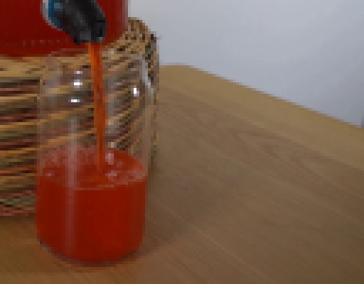
视觉工具实际返回图片 3
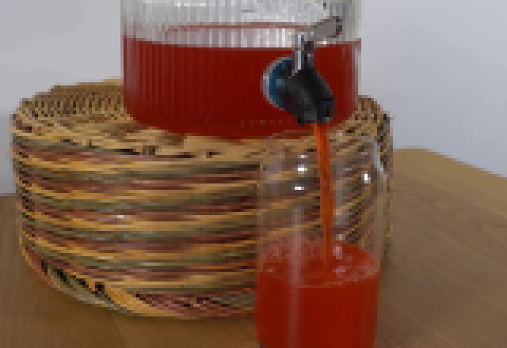
视觉工具实际返回图片 4
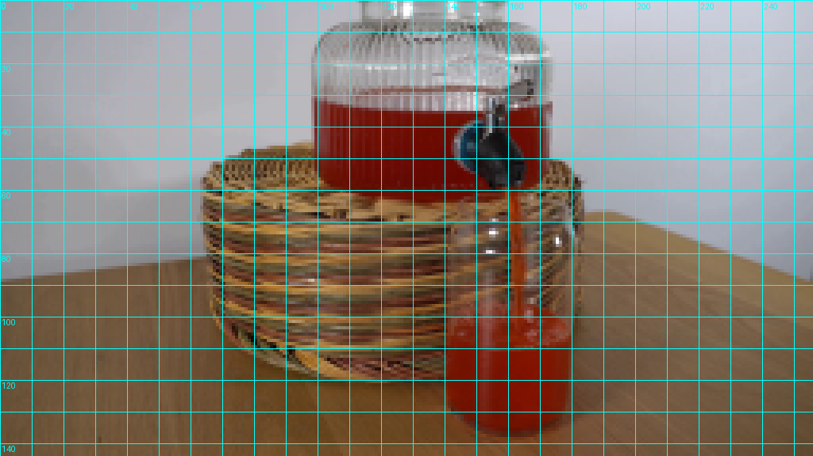
视觉工具实际返回图片 5
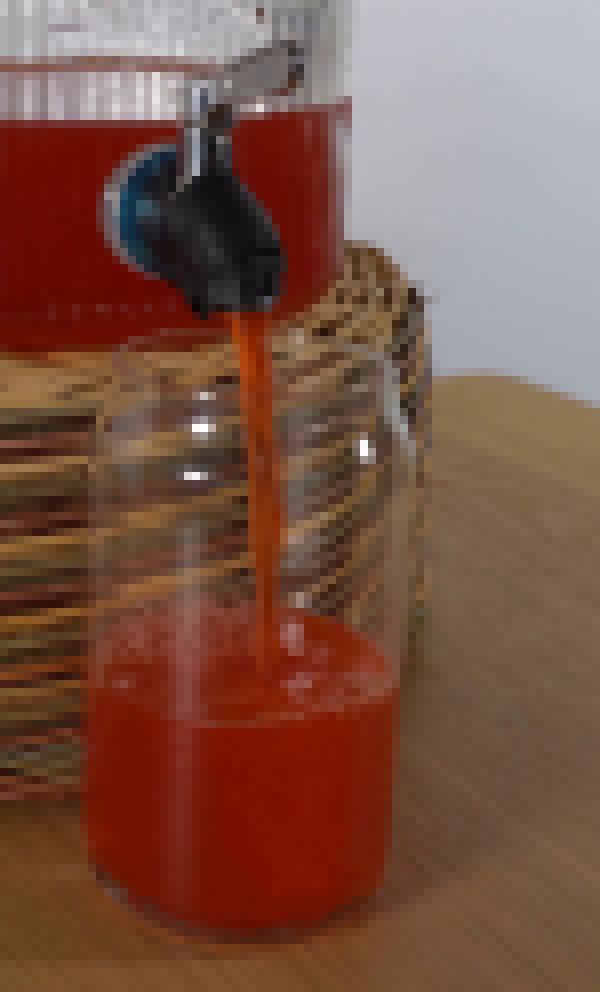
视觉工具实际返回图片 6
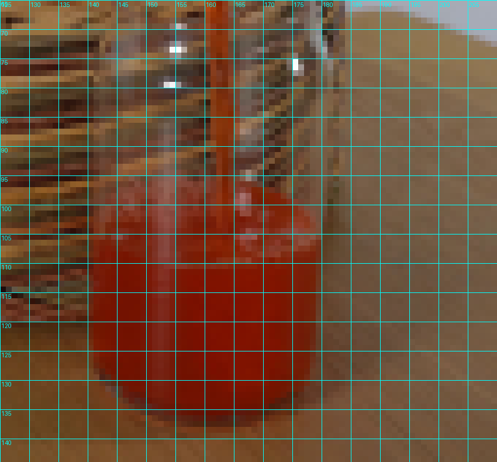
视觉工具实际返回图片 7
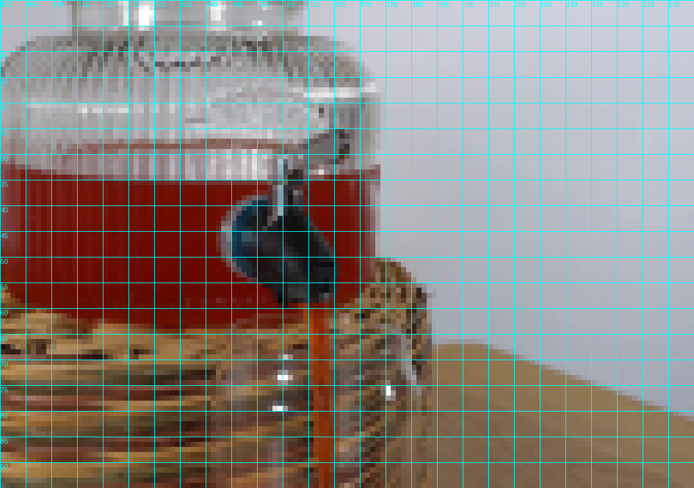
视觉工具实际返回图片 8
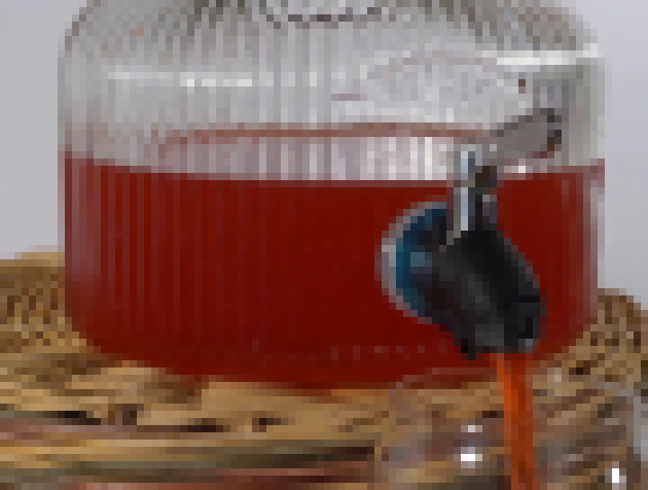
视觉工具实际返回图片 9
视觉工具实际返回图片 10
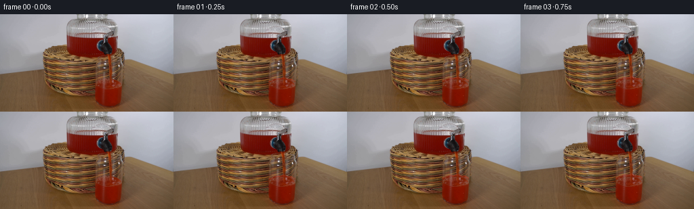
视觉工具实际返回图片 11
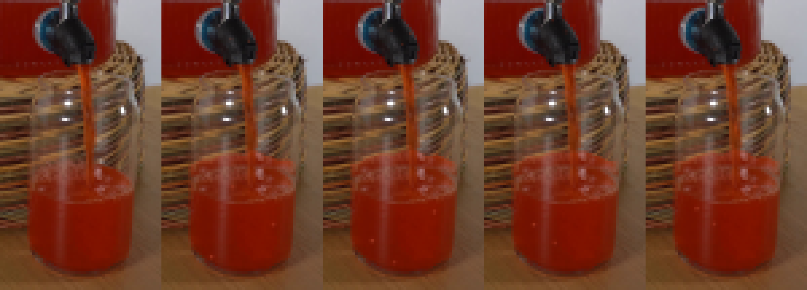
视觉工具实际返回图片 12
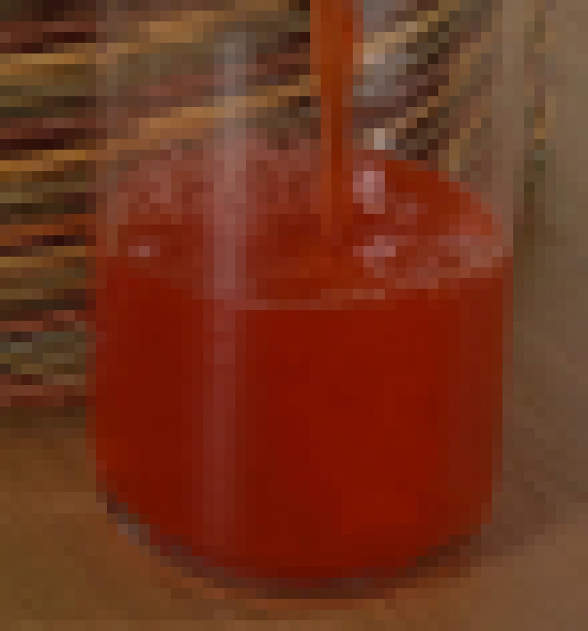
视觉工具实际返回图片 13
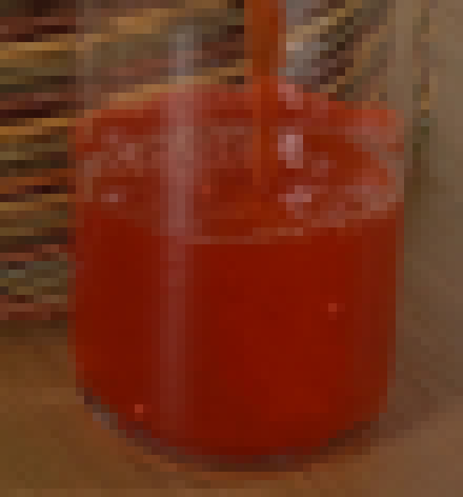
视觉工具实际返回图片 14
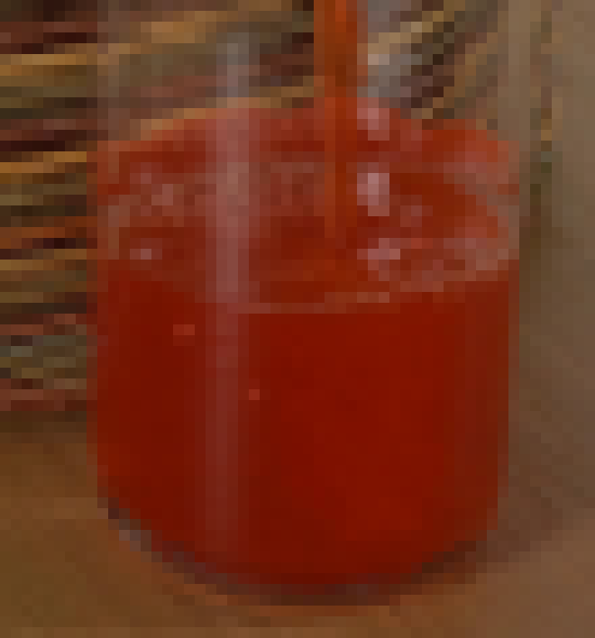
视觉工具实际返回图片 15
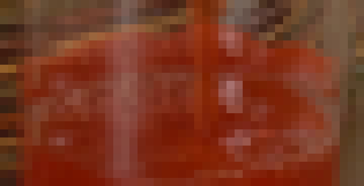
视觉工具实际返回图片 16

视觉工具实际返回图片 17

保存候选 3 份；完成命令 32 次；可验证图片返回 17 张。原始 API 响应与完整日志保留在本地。